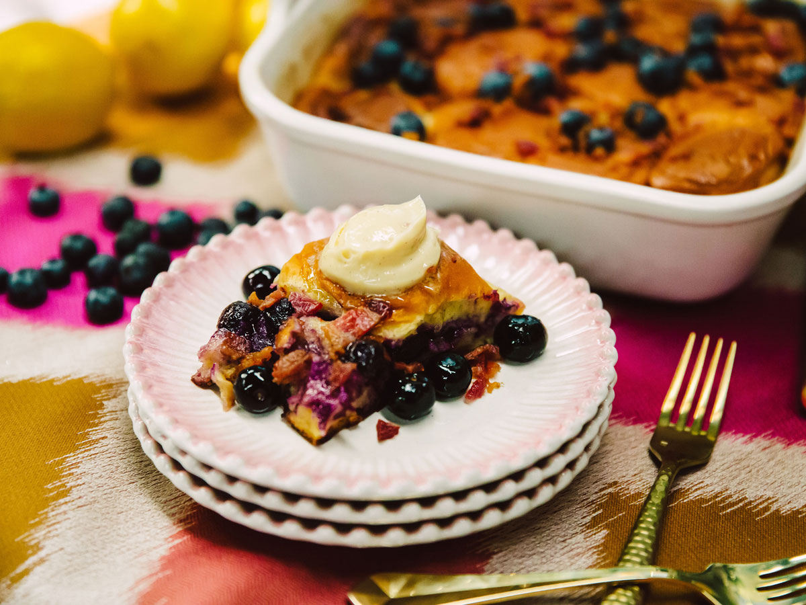

Baked Blueberry Lemon French Toast

What is Baked French Toast?
Baked French toast, also known as a French toast casserole, is a make-ahead breakfast dish with custard-soaked bread baked until golden brown, adding desired toppings such as fruit, confectioners sugar or maple syrup.
Ingredients
- 1 (12-count) package KINGS HAWAIIAN Original Hawaiian Sweet Dinner Rolls, cubed
- 1 cup blueberries
- 3 large eggs
- 2 tablespoons maple syrup, or more, to taste
- 1 tablespoon lemon zest
- 1 ½ teaspoons vanilla extract
- 1 teaspoon ground cinnamon
- ¼ teaspoon ground nutmeg
- 2 tablespoons confectioners sugar
For The Crumb Topping
- ¼ cup all-purpose flour
- ¼ cup brown sugar, packed
- ½ teaspoon ground cinnamon
- ¼ cup unsalted butter, cut into cubes
Steps
- Lightly coat a 9 x 13 baking dish with nonstick spray. Place a layer of bread cubes evenly into the baking dish. Top with blueberries in an even layer, repeating 2 more times and ending with a layer of bread.
- In a large glass measuring cup or another bowl, whisk together milk, eggs, maple syrup, lemon zest, vanilla, cinnamon and nutmeg. Pour mixture evenly over the bread cubes. Cover and place in the refrigerator for at least 2 hours or overnight.
- Preheat oven to 350 degrees F. Remove baking dish from the refrigerator; let stand 30 minutes. Sprinkle the crumb topping evenly over the bread cubes.
- Place into oven and bake for 35-45 minutes, or until golden brown.
- Serve immediately, sprinkled with confectioners sugar, if desired.
For The Crumb Topping
- In a small bowl, combine flour, sugar and cinnamon. Add cold butter and toss to coat, using your fingers to work the butter into the dry ingredients until it resembles coarse crumbs.
Home